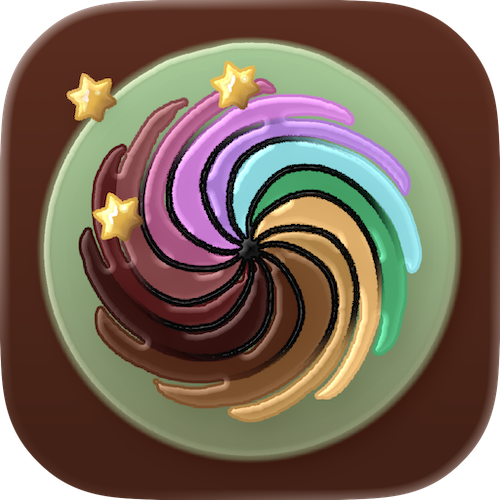

If you landed here, you are hopefully a fan of delicious cookies and already know the advantages of the Baking Studio.
Then you also know that we do not collect user data, there are no links to third parties or advertising, and that there are no costs for you—you know that you can simply make delicious cookies!
However, you have arrived at this page because you have questions or suggestions? Please feel free to browse or contact us so that we can assist you further.
Enjoy the rest of your journey through the delicious world of baking adventures.
How do I create new recipes?
Each self-made recipe starts with the selection of a cookie type. To do this, first click on the cookie you want to bake at: classic cookies, cut-out cookies, brownies & co. or short bread cookies.
Alternatively, you can also get inspired. Just click on the “inspire me!” button. By liking a recipe (small heart symbol or swipe right), you can add it to your list and continue from there. Click on the info button in the middle to view all the key details of the recipe.
Once you have selected a cookie type for your own recipe, use the respective picker to set your individual recipe. Click on the desired quantity of cookies and check the recipe summary again to make sure you have all the ingredients or if you need to make any changes.
At the bottom of the page, you will find a note indicating how many steps you need to take to enjoy your baked cookies. Click on the “Start baking!” button and follow the instructions.
Is there a baking mode that supports me?
The baking steps will always display what you need to do and which ingredients you require. Once you have selected a flavor, you can use it in different ways: in the dough itself, on the outside of the dough before baking, or for decoration. Therefore, do not be surprised if the information is displayed in different steps. Ignore the information if you have decided on a different use.
How can I use the timer?
The baking timer is always set to the appropriate time for the individual recipe and can be started immediately. The timer continues to run even if you surf the Internet or play a game while waiting. Just make sure you don't close the app or pull down the sheet, otherwise you'll have to start over.
In the settings, you can choose whether or not to allow notifications for the timer. There you can also test and select the alarm sound. If you don't want to hear the alarm sound, click on the mute icon in the upper left corner directly in the baking mode step.
Can I save my recipe?
Yes. To save your recipe, enter a name in the last step of the baking mode. Once you have saved your recipe, you can call it up again in your list to specify detailed information or bake it again.
Can I organize my recipes in the list myself?
Yes. In your cookie list, you can not only filter and search for many variations, but also customize the order of the list by dragging and dropping the list items.
Can I add information to my saved recipe or change it later?
Yes. By clicking on the list item, you can add detailed notes to each recipe. Click then on the pencil icon to edit additional information about your recipe, add a photo from your library, set the emoji, or rate the recipe.
If you want to bake it again later, you can change the number of cookies in this edit mode and the ingredient quantities will be adjusted accordingly, so you can start baking again as soon as you have saved your changes.
Can I share my recipe with others?
Under the “bake it again” button, you will find a button to share the recipe with others as a PDF file.
Customize your app via settings
As you might have noticed, on settings page you can configure the appearance and language (English or German).
You can also read about what we do with your data—namely, nothing. We don't collect data. We don't make apps to collect data, but because we enjoy it. If you want to know more about us, at the bottom of the page you'll find not only copyright information, but also some information about us.
As the development team, we would be delighted if you would rate us in the App Store, recommend the app to others, or send us feedback or ideas to improve this app.
Are there any other tips that can help me?
Directly in your app under the Tips & Tricks section, you will find more detailed information about individual ingredients, Q&As, and tips.
Just take a look around while you enjoy your delicious homemade cookies.
The information included in the Baking Studio App is based on years of experience in baking and especially in making cookies. The content has been compiled to the best of our knowledge and belief and verified using numerous traditional and experimental recipes.
The content of the app is intended solely to assist you in making new cookies with the desired flavors. The entire content is NOT approved for commercial, business, consulting, academic, professional, legally binding, or similar purposes, nor is it intended for such purposes.
We are constantly working to improve the app. Nevertheless, calculations may be incorrect and, in the worst case, may even contain recommendations that are hazardous to health.
We are only liable for the intended use and exclusively within the scope of the App Store's “LICENSED APPLICATION END USER LICENSE AGREEMENT” (EULA) and legal provisions.
Furthermore, as the developer of this app, we accept no liability, in particular for the accuracy, completeness, and timeliness of the information and any resulting damage, consequential damage, or other disadvantages.
Before using the suggested ingredients, always check whether you have any intolerances or allergies (this applies in particular—but not exclusively—to all ingredients that often trigger allergic reactions, such as nuts).
When baking, never leave the stove and oven unattended.
The development of this app took a long time and is based on many years of experience. It would be great if you could take a moment to leave a few stars in the App Store. Thank you.
If you have any questions, suggestions, or criticism regarding this app, please send an email to:
iolanovateam@gmail.com
No personal data is processed when using the Baking Studio App. You can use the Baking Studio App without providing your personal data.
You can always reach out to us if you have any questions about data protection law or about your rights as a data subject under: iolanovateam@gmail.com
The Baking Studio App is subject to the European Data Protection Guidelines (GDPR), https://commission.europa.eu/law/law-topic/data-protection/legal-framework-eu-data-protection_en
This data protection policy is currently valid and was last amended as of November 2025. Due to further development of our App or due to changed legal or regulatory requirements it might get necessary to amend the Baking Studio App data protection policy.